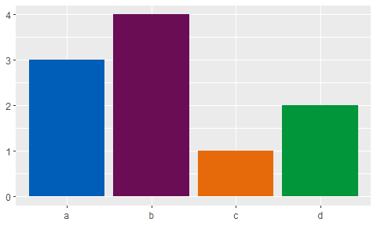
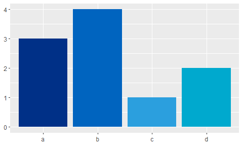
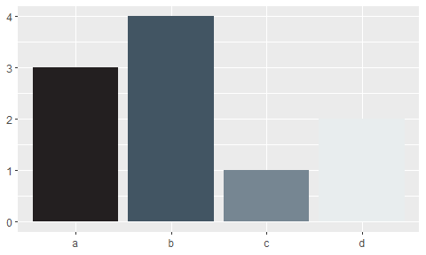
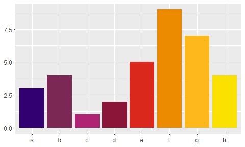

This repo attempts to build an R package that can provide themes to ggplot for producing charts that follow the NHS Identity.
Installing NHSRtheme
{NHSRtheme} is not currently on CRAN, so you will have to install it directly from Github using devtools.
If you do not have the devtools package installed, you will have to run the first line in the code below as well.
# install.packages('devtools')
devtools::install_github('nhs-r-community/NHSRtheme')Examples
library(ggplot2)
library(NHSRtheme)
df <- data.frame(x = c("a", "b", "c", "d"), y = c(3, 4, 1, 2))
bars <- ggplot(df, aes(x, y, fill = x)) +
geom_bar(stat = "identity") +
labs(x = NULL, y = NULL) +
theme(legend.position = "none")
bars + scale_fill_nhs()
bars + scale_fill_nhs(palette = 'blues')
bars + scale_fill_nhs(palette = 'neutrals') 
bars + scale_fill_nhs(palette = 'support greens')
df2 <- data.frame(x = c("a", "b", "c", "d", "e", "f" ,"g", "h"),
y = c(3, 4, 1, 2, 5, 9, 7, 4))
bars2 <- ggplot(df2, aes(x, y, fill = x)) +
geom_bar(stat = "identity") +
labs(x = NULL, y = NULL) +
theme(legend.position = "none")
bars2 + scale_fill_nhs(palette = 'highlights')